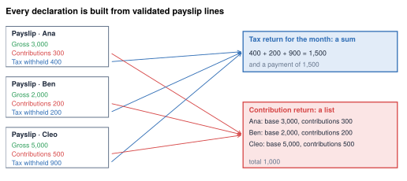

Declarations and the compliance calendar
Who gets which report, how often, and what must match
- Name the four kinds of payroll filing every country has, and the newer per-payslip and per-pay-run models
- Explain why every declaration is a sum or a list of validated payslip lines
- Say which filings must agree with each other
- Place filings, payments and yearly events on one calendar
- Name the Odoo models that produce each of MyVidangeCompany's filings
Payroll does not end at the bank transfer. MyVidangeCompany notifies each hire before the first hour, reports the tax withheld every month, the contributions every quarter, and each employee's yearly totals every February. All must agree with the payslips and with each other. The form names are Belgian; the four kinds of filing exist almost everywhere.
What a payroll declaration is
A payroll declaration (payroll return, filing, payroll report) is a report the employer sends to an authority about its payroll: who works for it, what they earned, and what was withheld or is owed. Most declarations come with a payment, or are checked against one. They go to the social security office, the tax authority, and sometimes the employee.
Three things follow from that definition:
- It is built from the payslips. Every declaration is a filtered sum or list of validated payslip lines. If a declaration needs a number the payslips do not have, the payslips are missing a rule.
- It runs on the authority's calendar, not the payroll's: at each hire or exit, each month or quarter, each year (the four clocks of Chapter 1).
- Declarations must agree with each other and with the payments. An authority that receives two numbers compares them.

Who receives which filing
Three parties receive payroll reports, and each needs them for a different reason. Social security must know who is insured and on what pay: it collects the contributions, and it computes each worker's pension, unemployment and sick pay from what the employer declared. The tax authority collects the tax withheld, which is the employee's income tax paid in advance, and must credit it to the right person. The employee needs his yearly totals to file his own tax return.
Contribution return, per worker
Annual certificate per employee
A copy of his annual certificate
Four kinds of filing
| Kind | Purpose | Frequency | MyVidangeCompany (Belgium) |
|---|---|---|---|
| Hire and exit notification | tells the state someone works, before anything is paid | at each event | Dimona |
| Periodic contribution return | per worker: pay, working time, contributions | monthly or quarterly | DmfA, quarterly |
| Periodic withholding return | total tax withheld, paid with the return | monthly | form 274 |
| Annual employee certificate | per employee: the year's taxable pay and tax withheld | yearly | tax slip 281.10 |
Newer models report every payslip or every pay run, so a correction is a resend rather than an amendment. Some countries add payment-control files, where the salary transfer itself is reported.
Around the world
- United States: quarterly withholding return (941), annual wage statement per employee (W-2).
- Mexico: one signed electronic payslip (CFDI) per payslip, sent to the tax office.
- Australia: a pay-event report every pay run (Single Touch Payroll).
- UAE: a Wage Protection System salary file; no tax filing.
- Hong Kong: employer's returns at year end, hire and exit.
Case study: MyVidangeCompany's filings
The hire and exit notice
Belgium's Dimona is due at the latest when the worker starts, and the exit notice on the first working day after the end.1 Yannick's is due on 12 March 2026; Emma's exit notice on Monday 2 November.
The monthly withholding return
MyVidangeCompany files form 274 monthly and pays the tax with it, around the 15th of the next month.3,4
Worked example: the withholding return for October 2026
In a standard month the five regular payslips withhold 4,646.49 €. October 2026 is not standard: Emma's final pay replaces her regular payslip.6
| Withholding, October 2026 | Amount (€) |
|---|---|
| Mélanie, Jurgen, Marie, Yannick | 3,401.22 |
| Emma's final pay (salary, premium, exit holiday pay, indemnity) | 17,179.39 |
| Return for October 2026, due 13 November 2026 | 20,580.61 |
The return separates the amounts by kind of income (salary, holiday pay, indemnities), so each payslip line must carry that classification.
In Odoo. The return is literally a sum of payslip lines: Odoo's February 2026 return, 3,978.86 €, equals that month's withholding lines. For October Odoo withholds 18,216.35 €; the gap comes from Emma's final pay (Chapter 6).5
The quarterly social security return and the annual tax slip
The quarterly return (DmfA) lists, per worker, the pay by code, working time, contributions and reductions; it is due on the last day of the month after the quarter.2 Each February, the employer sends one annual tax slip (281.10) per employee to the tax administration, with a copy to the employee.7
What must match
An authority often receives the same money twice, by two different roads, and compares the two. Withholding tax is the clearest case:
- Every month, the withholding return gives the month's total for all employees, and the employer pays it. The tax office knows what it received.
- After the year, the annual certificates give each employee's total for the year. The tax office knows how much to credit to each person against his final tax.
Both are sums of the same payslip lines, one by month and one by employee, so their grand totals must be equal. If the certificates add up to more than the returns, employees are credited with tax that nobody paid, and the tax office asks why.
| Tax withheld | Jan | Feb | … | Dec | Annual certificate |
|---|---|---|---|---|---|
| Employee A | 300 | 300 | … | 300 | 3,600 |
| Employee B | 200 | 200 | … | 200 | 2,400 |
| Employee C, joins in July | 0 | 0 | … | 100 | 600 |
| Monthly return | 500 | 500 | … | 600 | 6,600 = 6,600 |
Contributions follow the same logic: the contribution return lists each worker's contributions, and their sum must equal what was paid for the period. Both must also equal the payroll debts in the accounts (Chapter 8). At MyVidangeCompany, the twelve monthly withholding returns of 2026 must add up to the annual tax slips, and each quarterly return must match the contributions paid. A localization makes these matches true by construction: every filing reads the same validated lines.
Common pitfall
Filing from a PDF or a spreadsheet. A payslip corrected after filing leaves the return silently out of date. Generate each declaration from the validated lines and regenerate it after a correction.
The payslip and the records to keep
Every country also sets the content of the payslip and the records to keep. In Belgium the payslip must show how pay is computed, and the employer keeps an individual account per worker.8,9 Retention periods were not researched (UNVERIFIED). A localization covers them with the payslip report and a yearly per-employee report.
The calendar
Put together, the filings give a calendar with four rhythms: the event, the month, the quarter and the year (Chapter 1).
Worked example: MyVidangeCompany's fourth quarter 2026
| Date | Event |
|---|---|
| 1 Nov | new withholding formula |
| 2 Nov | exit notice for Emma |
| early Nov | October net pay transferred: 37,177.22 € |
| 13 Nov | withholding return and payment for October: 20,580.61 € |
| December | year-end premiums |
| 31 Jan 2027 | quarterly social security return for Q4 |
| 28 Feb 2027 | annual tax slips for 2026 |
In practice
Order the filings by the cost of being late: the hire notice first, then the withholding return, then the contribution return, then the annual certificates. If a payroll bureau keeps filing one, agree how Odoo's numbers reach it.
In Odoo. Each localization adds one model per filing: Belgium has l10n_be.dmfa, l10n_be.274_xx and l10n_be.281_xx, among others. The yearly per-employee ones share hr.payroll.declaration.mixin (Chapter 22). Many smaller localizations ship no declaration at all. Chapter 17 produces the Belgian filings.
Summary
- Declarations are sums or lists of validated payslip lines; design the lines first.
- Four kinds of filing exist almost everywhere: hire and exit notification, periodic contribution return, periodic withholding return, annual employee certificate.
- Some countries report every payslip (Mexico) or every pay run (Australia); some add payment-control files (the UAE's Wage Protection System).
- MyVidangeCompany: Dimona at each hire and exit, a monthly withholding return (20,580.61 € for October 2026), a quarterly social security return, annual tax slips by 28 February.
- The year's withholding returns must agree with the annual certificates; contribution returns must agree with payments.
- Payslip content and record keeping are legal duties too.
-
ONSS, Dimona: https://www.socialsecurity.be/employer/instructions/dmfa/fr/latest/instructions/obligations/obligations_nsso/dimona/general.html and https://www.socialsecurity.be/employer/instructions/dmfa/fr/latest/instructions/obligations/obligations_nsso/dimona/declarations_modifications_cancellations.html. ↩
-
ONSS, DmfA general: https://www.socialsecurity.be/employer/instructions/dmfa/fr/latest/instructions/obligations/obligations_nsso/dmfa/general.html. ↩
-
SPF Finances, withholding tax return: https://finances.belgium.be/fr/entreprises/personnel_et_remuneration/precompte_professionnel/declaration. ↩
-
SPF Finances, withholding calendar: https://finances.belgium.be/fr/entreprises/personnel_et_remuneration/precompte_professionnel/calendrier. ↩
-
Payslips and declarations computed by Odoo master on the demo database,
research/numbers_be.md, sections 6 and 8. ↩ -
Independent calculator,
research/numbers_be_calc.md, sections 5 and 10.2. ↩ -
SPF Finances, Belcotax-on-web deadlines: https://finances.belgium.be/fr/E-services/Belcotaxonweb/delais-de-rentree-des-fiches; Belcotax-on-web: https://finances.belgium.be/fr/E-services/Belcotaxonweb. ↩
-
SPF Emploi, payslip and receipt for the balance: https://emploi.belgique.be/fr/themes/remuneration/protection-de-la-remuneration/decompte-de-paie-et-quittance-pour-solde-de. ↩
-
ONSS, social documents: https://www.socialsecurity.be/employer/instructions/dmfa/fr/latest/instructions/obligations/obligations_other/socialdocuments.html. ↩